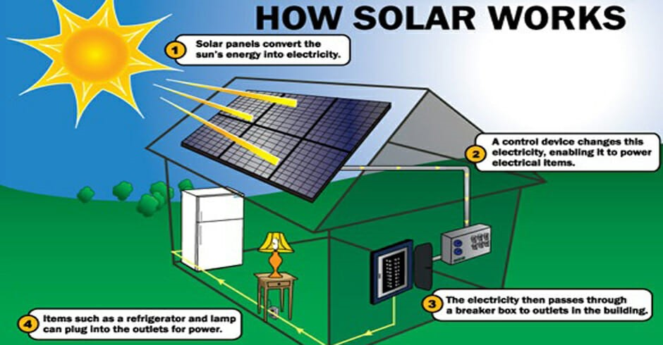
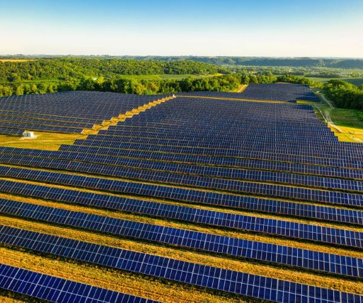

What is Solar Energy?
Solar energy is energy harnessed from sunlight using technologies like solar panels and solar thermal systems. It’s a clean, renewable energy source that plays a critical role in reducing greenhouse gas emissions and combating climate change.
How Solar Energy Works
Solar panels convert sunlight into electricity through photovoltaic cells. The energy from the sun is absorbed by the panels, which then generate electrical current.
Solar energy is one of the most widely adopted renewable energy technologies due to its ability to generate electricity from a free, abundant resource.


Advantages
Energy Independence : As most parts of the Earth receive
sunlight, every country has the potential to harness solar energy of its own.
Low Environmental Impact : Solar Panel do not
produce noise,
unlike windmills. They do not disturb the quality of life of people and animals living
in the
vicinity.
Sustainability : The Sun will exist until the end of
civilisation.
Without it, humans would likely go extinct. Therefore, its energy can be harnessed as
long as we
are still around.
Minimal upkeep : PV panels generally require little
maintenance
compared to other sources of energy, especially as there are no moving parts. This
reduces the
costs required to keep them operating.
Disadvantages
Limited uptime : As is obvious, electricity can only be generated from
solar
energy while the Sun is visible in the sky. This means that solar panels are only
effective
during the day and under clear weather, which means that the supply is not completely
reliable.
Land use : The installation of large-scale solar panel projects requires
a
similarly large amount of land, which could be infeasible for countries or cities with
limited
land space.
Hazardous materials : Though perhaps not as significant as that of other
energy
sources, solar technology does harbour many toxic materials. Therefore, one must
exercise
caution when disposing the waste generated from their use.
Significant initial cost : While the investment necessary to maintain
solar
panels pales in comparison to that required of windmills, procuring a solar system
necessitates
a considerable sum of money for the initial expenditure.